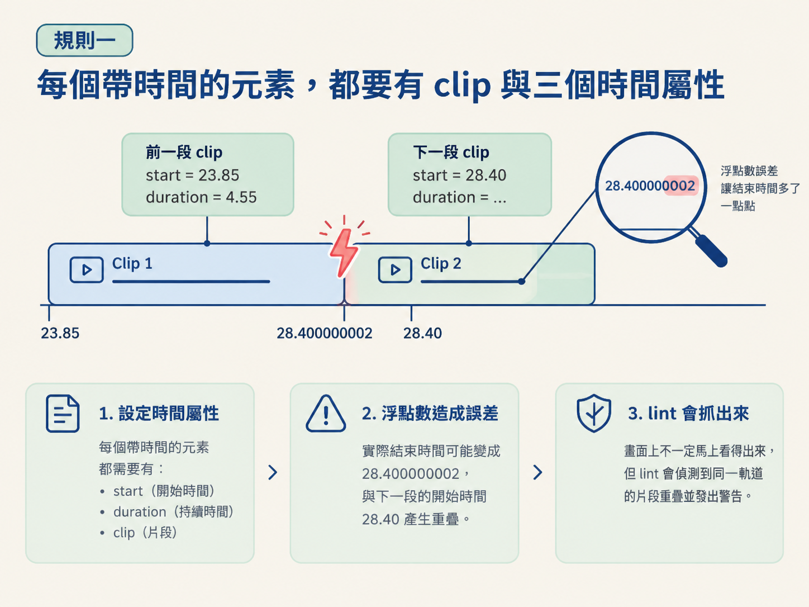

想像你把一個 composition 交給 agent。第一次渲染很順利：字幕準時出現，卡片也在台詞講到那一句時滑進畫面。接著你只把畫質調高，再算一次，卻發現卡片早了一拍，某個元素也停在不該停的位置。台詞完全沒改，最後卻得到兩支不同的影片。
這種差異在瀏覽器裡並不罕見。一般網頁可能受到載入順序、當下時間或亂數影響，每次顯示得不太一樣；影片卻不能接受這種不確定性。影片是一格一格記錄下來的，只要其中一格的畫面浮動，整支影片就可能前後對不上，甚至直接跳到第 30 秒 seek 時，看到錯誤的狀態。
HyperFrames 能把 HTML 穩定算成 MP4，靠的不是運氣，而是一套寫 composition 時必須遵守的規則。這套規則就是「composition 契約」。你可以把它想成影片的入場檢查：只有符合規則的 HTML，才有資格被框架逐格記錄。
整條 pipeline 可以先記成一句話：你寫 HTML、CSS 與 JavaScript，瀏覽器把它們畫成畫面，HyperFrames 再把每個時間點的畫面逐格記錄成影片。
HyperFrames 是 HeyGen 推出的開源工具，免費使用，在 GitHub 上已累積大約四萬九千顆星。它做的事情很直接：把 HTML 元素變成影片。這些元素，就是你平常在網頁上看到的那些標題、卡片、圖片與其他介面元件。換個生活化的說法，它有點像把自己做好的網站螢幕錄影下來。
這個工具還特別為 agent 設計，因此支援把 HTML 元素疊在影片上、執行動畫、調色，以及加入各種視覺效果。也因為 HyperFrames 運作在 HTML 裡，你可以用 21st.dev 上原本為網站設計的元件作為靈感：網站元件與影片畫面，使用的是同一套語言。
這裡最重要的連結是：畫面不是模型憑空生成的，而是瀏覽器按照你的程式碼實際畫出來，再一格一格記錄。因此，每一格畫面都必須只由程式碼與指定的時間決定，不能依賴現在幾點、瀏覽器跑得多快，或亂數剛好抽到了什麼。
可以把影片想成一本動畫書。動畫書能穩定播放，是因為每一頁都事先畫好了；翻到第幾頁，就應該看到固定的內容。如果每次翻頁時，都重新抽一次人物的位置，那這本書就沒辦法穩定拍成影片。
HyperFrames 算圖時，會逐格詢問 composition：「在時間 T，畫面應該長什麼樣子？」因此 composition 最理想的狀態，就像一個純函式：給它時間 T，它就回傳固定的一格畫面。
如果元素狀態取決於「現在的真實時間」，今天算與明天算就可能不同；如果狀態由亂數決定，每次計算也可能得到不同結果。契約要求的確定性，就是要把這些浮動因素排除。
這也和 seek 有關。算圖時，框架不一定會從頭播放到尾，也可能直接跳到第 18.5 秒，取出那一刻的畫面。如果動畫必須靠從頭播放、累積經過的時間才能進入正確狀態，直接跳過去時就可能看見它還沒開始的樣子。
所以 composition 裡的動畫，必須能從任意時間點還原狀態。它不能只在「從頭播放」這條路徑上算得對。
把剛才的原理轉成可以檢查的條件，主要有三條規則。第一條處理元素如何被時間控制；第二條處理動畫時間軸如何交給框架；第三條則限制程式碼裡不能出現哪些不確定因素。
三條規則合在一起，才會讓一份原本像網頁的 composition，變成能被逐格記錄的影片腳本。
在 HyperFrames 裡，畫面上每個會出現或消失的東西，都是一個片段（clip）。框架不需要猜你的動畫怎麼寫，而是直接讀取元素上的屬性：它何時開始、持續多久，以及位在哪一條軌道。
因此，這四個標記缺一不可：代表片段的 class="clip"，以及 data-start、data-duration、data-track-index。漏掉任何一個，lint 就會直接報錯。
| 屬性 | 代表的意思 |
|---|---|
class="clip" | 宣告這個元素是由框架管理時間的片段。 |
data-start | 這個片段從第幾秒開始出現。 |
data-duration | 這個片段持續幾秒，時間到就自動收掉。 |
data-track-index | 片段位在第幾條軌道；同時可見的元素要分開擺。 |
還有一個很容易漏看的細節：同一條軌道上的片段不能重疊，就算只差 0.001 秒也不行。
原因在於浮點數可能產生誤差。你寫下 start=23.85, duration=4.55，實際結束時間可能會變成 28.400000002，於是撞上下一段從 28.40 開始的片段。畫面上未必立刻看得出來，但 lint 會把這種碰撞抓出來。

動畫通常交給 GSAP 這類時間軸函式庫安排。這裡的關鍵不是讓時間軸自己播放，而是讓框架能夠在需要時，把它撥到指定的時間點。
因此，GSAP 時間軸建立時必須設為暫停，並用固定名稱註冊到全域的 window.__timelines。框架會拿到這條時間軸，再詢問它：「在這個刻度，畫面應該長什麼樣子？」名稱也要和 composition 的 id 對上；這裡使用的是 main。
window.__timelines = window.__timelines || {};
const tl = gsap.timeline({ paused: true });
// ... tl.from(...) ...
window.__timelines["main"] = tl; // matches data-composition-id這段程式的重點有兩個。第一是 paused: true：如果沒有暫停，時間軸會跟著瀏覽器的時鐘自行往前跑，結果就會重新受到計算當下時間的影響。
第二是最後一行的註冊。如果沒有把時間軸放進 window.__timelines["main"]，框架就找不到它，也就無法把時間撥到指定刻度來取畫面。
第三條規則最直接：程式碼不能使用會讓結果浮動的東西。契約明確禁止三個項目：Math.random()、Date.now() 與 fetch()。
Math.random() 每次可能抽到不同的值；Date.now() 會隨計算當下的時間改變；fetch() 則會從網路取得資料，而回應的時間與內容都不受 composition 控制。只要用了其中一個，同一份 HTML 就不可能保證每次都算出同一格。
同樣的原則也適用於動畫重複播放。無窮迴圈式的 repeat: -1 被列為禁止項，因為它沒有可預期的結束狀態。
如果你想讓元素來回閃動，應該使用有限的重複次數，而且次數要從畫面需要停留的時間反推出來。比如停留 6 秒、每次循環 1.6 秒，就自己算出最多能重複幾次，而不是交給無限迴圈。這樣一來，時間軸在任何時間點被抽出來時，狀態都能被明確算出來。
這些規則看起來像三張不同的檢查表，其實都在保護同一件事：框架必須能在任意時間點，可靠地重建同一個畫面。
第一條規則讓框架知道「誰在什麼時候出現」；第二條規則提供一條可以自由撥動的時間軸；第三條規則則確保撥到任何一刻時，元素狀態都能算得出來。
所以，這一課不是先教你怎麼做出最華麗的卡片動畫，而是先確認作品具備「能被算成影片」的資格。先拿到入場券，再談舞台上的表演。
HyperFrames 會先讓瀏覽器畫出 HTML，再把畫面逐格錄成 MP4。因此 composition 必須具備確定性：同一份檔案在任何時間點，都要算出同一格畫面。每個帶時間的元素都要有class="clip"、data-start、data-duration與data-track-index；GSAP 時間軸要設成暫停，並註冊到window.__timelines["main"]；程式碼不能使用Math.random()、Date.now()或fetch()，也不能使用無限次重複的動畫。
把這張入場券準備好，下一步才是實際動手：把剪好的 cut.mp4 與逐字稿交給 agent，讓它長出和時間對齊的動態圖像。下一節會走過「Animate the cut」指令，並用一頁 storyboard 先定下版面與卡片出現的節奏。